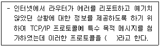
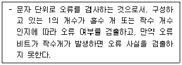
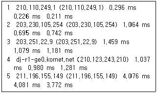
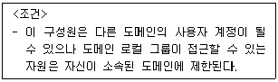
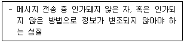
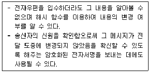

네트워크관리사-1급 (2020-10-25 기출문제)
1과목: TCP/IP
1. IP Address ′128.10.2.3′을 바이너리 코드로 변환한 값은?
- 11000000 00001010 00000010 00000011
- 10000000 00001010 00000010 00000011
- 10000000 10001010 00000010 00000011
- 10000000 00001010 10000010 00000011
(정답률: 84%)

2. IP Address 할당에 대한 설명으로 옳지 않은 것은?
- 198.34.45.255는 개별 호스트에 할당 가능한 주소이다.
- 127.0.0.1은 로컬 Loopback으로 사용되는 특별한 주소이다.
- 172.16.0.0은 네트워크를 나타내는 대표 주소이므로 개별 호스트에 할당할 수 없다.
- 220.148.120.256은 사용할 수 없는 주소이다.
(정답률: 74%)
3. C Class의 네트워크에서 호스트 수가 12개 일 때 분할할 수 있는 최대 서브넷 수는?
- 2
- 4
- 8
- 16
(정답률: 68%)
4. IPv6 프로토콜의 구조는?
- 32비트
- 64비트
- 128비트
- 256비트
(정답률: 83%)
5. TCP 헤더 포맷에 대한 설명으로 옳지 않은 것은?
- Checksum은 1의 보수라 불리는 수학적 기법을 사용하여 계산된다.
- Source 포트 32bit 필드는 TCP 연결을 위해 지역 호스트가 사용하는 TCP 포트를 포함한다.
- Sequence Number 32bit 필드는 세그먼트들이 수신지 호스트에서 재구성되어야 할 순서를 가리킨다.
- Data Offset 4bit 필드는 32bit 워드에서 TCP 헤더의 크기를 가리킨다.
(정답률: 29%)
6. IP Address 중 Class가 다른 주소는?
- 225.234.149.32
- 230.234.115.33
- 235.236.138.34
- 240.236.126.35
(정답률: 69%)
7. TCP에 대한 설명 중 옳지 않은 것은?
- 비연결형 서비스이고, UDP 보다 전송 속도가 빠르다.
- 목적지 프로세서가 모든 데이터를 성공적으로 수신했거나 오류가 발생했다는 메시지를 송신할 수 있다.
- 전송되는 데이터를 연속된 옥텟 스트림 중심의 데이터 전달 서비스를 제공한다.
- 옥텟 스트림은 세그먼트(Segment) 단위로 나눈다.
(정답률: 80%)
8. UDP 헤더 포맷에 대한 설명으로 옳지 않은 것은?
- Source Port : 데이터를 보내는 송신측의 응용 프로세스를 식별하기 위한 포트 번호이다.
- Destination Port : 데이터를 받는 수신측의 응용 프로세스를 식별하기 위한 포트 번호이다.
- Length : 데이터 길이를 제외한 헤더 길이이다.
- Checksum : 전송 중에 세그먼트가 손상되지 않았음을 확인 할 수 있다.
(정답률: 54%)
9. TFTP에 대한 설명 중 옳지 않은 것은?
- 시작지 호스트는 잘 받았다는 통지 메시지가 올 때까지 버퍼에 저장한다.
- 중요도는 떨어지지만 신속한 전송이 요구되는 파일 전송에 효과적이다.
- 모든 데이터는 512바이트로 된 고정된 길이의 패킷으로 되어 있다.
- 보호등급을 추가하여 데이터 스트림의 위아래로 TCP 체크섬이 있게 한다.
(정답률: 45%)
10. OSI 참조모델의 트랜스포트 계층에 대응하는 프로토콜은?
- TCP
- IP
- ARP
- SNMP
(정답률: 73%)
11. 서브넷 마스크에 대한 설명으로 올바른 것은?
- IP Address에서 네트워크 ID와 호스트 ID를 구분하고, 목적지 호스트의 IP Address가 동일 네트워크상에 있는지를 확인한다.
- 여러 개의 네트워크 Address를 하나의 Address로 통합한다.
- IP Address는 효율적으로 관리하나 트래픽 관리 및 제어가 어렵다.
- 불필요한 Broadcasting Message를 제한할 수 없다.
(정답률: 73%)
12. ARP와 RARP에 대한 설명 중 옳지 않은 것은?
- ARP와 RARP는 네트워크 계층에서 동작하며 인터넷 주소와 물리적 하드웨어 주소를 변환하는데 관여한다.
- ARP는 IP 데이터그램을 정확한 목적지 호스트로 보내기 위해 IP에 의해 보조적으로 사용되는 프로토콜이다.
- RARP는 로컬 디스크가 없는 네트워크상에 연결된 시스템에 사용된다.
- RARP는 브로드캐스팅을 통해 해당 네트워크 주소에 대응하는 하드웨어의 실제 주소를 얻는다.
(정답률: 49%)
13. TCP/IP 프로토콜의 하나로 호스트끼리 Mail을 전송하는데 관여하는 프로토콜은?
- SNMP
- SMTP
- UDP
- TFTP
(정답률: 83%)
14. 응용 계층 수준에서 보안기능을 제공하는 프로토콜은?
- CA
- TLS
- IPSec
- SSH
(정답률: 63%)
15. ( ) 안에 들어갈 프로토콜은?

- FTP
- ICMP
- ARP
- TCP
(정답률: 74%)
16. IP 헤더 필드 중 단편화 금지(Don′t Fragment)를 포함하고 있는 필드는?
- TTL
- Source IP Address
- Identification
- Flags
(정답률: 58%)
2과목: 네트워크 일반
17. 멀티캐스트 라우터에서 멀티캐스트 그룹을 유지할 수 있도록 메시지를 관리하는 프로토콜은?
- ARP
- ICMP
- IGMP
- FTP
(정답률: 81%)
18. 국제표준화기구 중 주로 근거리 통신망(LAN)에 대한 표준화를 담당하는 곳은?
- ITU
- ISO
- ANSI
- IEEE
(정답률: 72%)
19. 다음에서 설명하는 오류검사 방식은?

- 해밍 코드
- 블록합 검사
- 순환중복 검사
- 패리티 검사
(정답률: 64%)
20. 전송효율을 높이기 위해 블록의 길이를 채널의 상태에 따라 동적으로 변경시켜 전송하는 방식은?
- Adaptive ARQ
- Go-back-N ARQ
- Select ARQ
- Stop-and-wait ARQ
(정답률: 60%)
21. 패킷 교환기의 기능으로 옳지 않은 것은?
- 경로 설정
- 수신된 패킷의 저장
- 전송되는 패킷의 변환
- 최종목적지 교환기의 순서제어
(정답률: 30%)
22. 네트워크 관리 및 네트워크 장치와 그들의 동작을 감시, 총괄하는 프로토콜은?
- ICMP
- SNMP
- SMTP
- IGMP
(정답률: 69%)
23. 무선 통신에서 가장 널리 사용되는 방식으로 코드에 의해 구분된 여러 개의 단말기가 동일한 주파수 대역을 사용하며, 채널로 보다 많은 통신 노드를 수용할 수 있는 무선 전송 방식은?
- CDMA
- TDMA
- CSMA/CD
- FDMA
(정답률: 45%)
24. 아날로그 신호를 전송하기 위한 필수적인 신호처리 과정으로 옳지 않은 것은?
- 부호화
- 양자화
- 정보화
- 표본화
(정답률: 69%)
25. 광통신 전송로의 특징으로 옳지 않은 것은?
- 긴 중계기 간격
- 대용량 전송
- 비전도성
- 협대역
(정답률: 56%)
26. 정보를 실어 나르는 기본 단위를 계층별로 표시하였다. 옳지 않은 것은?
- 계층 1 : X.25
- 계층 2 : 프레임(Frame)
- 계층 3 : 패킷(Packet)
- 계층 4 : 세그먼트(Segment)
(정답률: 74%)
27. 데이터 트래픽의 고속 전송을 위하여 링크계층에서 다중화를 수행하는 패킷 교환 기술로 사용자에게 제공되는 서비스 관점에서 프레임 모드 베어러 서비스(FMBS:Frame Mode Bearer Service)라 불리는 것은?
- Frame relay
- MAN
- DQDB
- X.25
(정답률: 61%)
3과목: NOS
28. Linux의 ′fdisk′ 명령어 옵션(command)에 대한 설명 중 올바른 것은?
- t : 파티션의 시스템 ID를 변경
- l : 파티션 삭제
- m : 새로운 파티션 추가
- a : 새로운 DOS 파티션 테이블을 생성
(정답률: 26%)
29. 아파치 서버의 설정 파일인 ′httpd.conf′의 항목에 대한 설명으로 옳지 않은 것은?
- KeepAlive On : HTTP에 대한 접속을 끊지 않고 유지한다.
- StartServers 5 : 웹서버가 시작할 때 다섯 번째 서버를 실행 시킨다.
- MaxClients 150 : 한 번에 접근 가능한 클라이언트의 개수는 150개 이다.
- Port 80 : 웹서버의 접속 포트 번호는 80번이다.
(정답률: 56%)
30. Linux의 ′vi′ 명령어 중 변경된 내용을 저장한 후 종료하고자 할 때 사용해야 할 명령어는?
- :wq
- :q!
- :e!
- $
(정답률: 70%)
31. Linux 시스템에서는 하드디스크 및 USB, CD-ROM 등을 마운트(Mount) 해야만 사용할 수 있다. 시스템 부팅시 이와 같은 파일시스템을 자동으로 마운트하기 위한 설정 파일로 올바른 것은?
- /etc/fstab
- /etc/services
- /etc/filesystem
- /etc/mount
(정답률: 40%)
32. Linux 시스템의 파일 사용자 허가에 대한 설명으로 옳지 않은 것은?
- 사용 허가의 3가지 부분으로 나눠지며, 이것은 읽기(Read), 쓰기(Write), 실행(Execute) 가능 허가이다.
- Linux 시스템은 다중 사용자 시스템이기 때문에 파일 사용 허가라 불리우는 메커니즘을 제공한다.
- 사용 허가의 문자열 'rwx'를 십진수로 나타내면 r은 4, w는 2, x는 0 이다.
- 문자열 '-rwxrwxrwx'에서 '-'는 일반 파일을 의미한다.
(정답률: 68%)
33. 아래 내용은 Linux의 어떤 명령을 사용한 결과인가?

- ping
- nslookup
- traceroute
- route
(정답률: 59%)
34. Linux에서 프로세스의 상태를 확인하고자 할 때 사용하는 명령어는?
- ps
- w
- at
- cron
(정답률: 75%)
35. Linux 시스템의 기본 디렉터리에 대한 설명으로 옳지 않은 것은?
- /etc : 시스템 설정과 관련된 파일이 저장된다.
- /dev : 시스템의 각종 디바이스에 대한 드라이버들이 저장된다.
- /var : 시스템에 대한 로그와 큐가 쌓인다.
- /usr : 각 유저의 홈 디렉터리가 위치한다.
(정답률: 50%)
36. 서버 담당자 Park 사원은 Windows Server 2016에서 공인 CA에서 새로운 인증서를 요청하기 위해 실행중인 IIS를 사용해 CSR(Certificate Signing Request)를 생성하고자 한다. 이때 작업을 위해 담당자가 선택해야 하는 애플릿 항목은?
- HTTP 응답 헤더
- MIME 형식
- 기본 문서
- 서버 인증서
(정답률: 63%)
37. 서버 담당자 Park 사원은 Windows Server 2016에서 Active Directory를 구축하여 관리의 편리성을 위해 그룹을 나누어 관리하고자 한다. 다음의 제시된 조건에 해당하는 그룹은 무엇인가?

- Global Group
- Domain Local Group
- Universal Group
- Organizational Unit
(정답률: 52%)
38. 서버 담당자 Park 사원은 Windows Server 2016에서 Active Directory를 구성중에 있다. 이때 한 도메인 안에서 세부적인 단위로 나누어 관리부, 회계부, 기술부 등의 부서로 구성하고자 한다. 서버 담당자가 설정해야 하는 항목은 무엇인가?
- DC(Domain Controller)
- RDC(Read Only Domain Controller)
- OU(Organizational Unit)
- Site
(정답률: 53%)
39. Windows Server 2016가 설치된 컴퓨터는 항상 가동하는 것이 일반적인 용도이기 때문에 서버 담당자 Park 사원은 시스템을 종료할 때마다 그 이유를 명확히 하여 더 안정적인 시스템 운영하고자 한다. 다음 중 이전에 종료 또는 재부팅된 기록을 확인할 수 있는 항목은?
- 성능모니터
- 이벤트뷰어
- 로컬보안정책
- 그룹정책편집기
(정답률: 74%)
40. 서버 담당자 Park 사원은 Hyper-V 부하와 서비스의 중단 없이 Windows Server 2012 R2 클러스터 노드에서 Windows Server 2016으로 운영체제 업그레이드를 진행하려고 한다. 다음 중 작업에 적절한 기능은 무엇인가?
- 롤링 클러스터 업그레이드
- 중첩 가상화
- gpupdate
- NanoServer
(정답률: 53%)
41. 네트워크 담당자 Kim 사원은 Windows Server 2016에서 원격 액세스 서비스를 운용하고자 한다. Windows Server 2016 내에 있는 이 기능은 DirectAccess와 VPN과 달리 원격 컴퓨터를 네트워크에 연결하는데 사용되지 않는다. 이 기능은 오히려 내부 웹 리소스를 인터넷에 게시하는데 사용된다. 이 기능은 무엇인가?
- WAP(Web Application Proxy)
- PPTP(Point-to-Point Tunneling Protocol)
- L2TP(Layer 2 Tunneling Protocol)
- SSTP(Secure Socket Tunneling Protocol)
(정답률: 55%)
42. 서버 담당자 Park 사원은 Windows Server 2016의 장애를 대비하여 인증서 키를 백업해 놓았다. 이 인증서 키를 실행창에서 명령어를 통해 복원시키고자 하는데 인증서 관리자를 호출할 수 있는 명령어는 무엇인가?
- eventvwr.msc
- compmgmt.msc
- secpol.msc
- certmgr.msc
(정답률: 60%)
43. 서버 담당자 Park 사원은 Windows Server 2016에서 기존의 폴더 또는 파일을 안전한 장소로 보관하기 위해 백업 기능을 사용하고자 한다. Windows Server 2016은 자체적으로 백업 기능을 제공해주기 때문에 별도의 외부 소프트웨어를 설치하지 않아도 백업 기능을 사용할 수 있다. 다음 중 Windows Server 백업을 실행하는 방법으로 올바르지 않은 것은?
- [시작] - [실행] - wbadmin.msc 명령을 실행
- [제어판] - [시스템 및 보안] - [관리도구] - [Windows Server 백업]
- [컴퓨터 관리] - [저장소] - [Windows Server 백업]
- [시작] - [실행] - diskpart 명령을 실행
(정답률: 41%)
44. 서버 담당자 Park 사원은 Windows Server 2016의 배포 서비스를 통하여 전원만 넣으면 Windows가 설치될 수 있도록 구성하고자 한다. 배포서비스는 회사내의 일관되고 표준화된 Windows 설치를 사용하여 아주 유용하게 사용할 수 있다. 다음 중 Windows Server 2016 배포 서비스의 장점으로 올바르지 않은 것은?
- 효율적인 자동 설치를 통한 비용 감소 및 시간 절약할 수 있다.
- 네트워크 기반으로 하는 운영체제 설치할 수 있다.
- 여러 대의 컴퓨터에 분산된 공유 폴더를 하나로 묶어서 사용할 수 있다.
- Windows 이미지를 클라이언트 컴퓨터에 배포할 수 있다.
(정답률: 44%)
45. 서버 담당자 Park 사원은 Windows Server 2016에서 두개의 노드 사이에 저장소를 공유하는 저장소 복제 기능을 사용하고자 한다. 다음 중 Windows Server 2016에서 저장소 복제 기능을 구축하여 활용하고자 하는 방안이 다른 것은?
- 클러스터를 여러 물리 사이트로 확장하는 경우
- 두 개의 각 클러스터 사이에 데이터를 최신 상태로 유지하는 경우
- 두 개의 다른 위치에 저장된 동일한 파일의 중복을 제거하고자 하는 경우
- 서버간 저장소 복제 모드를 사용하는 경우
(정답률: 39%)
4과목: 네트워크 운용기기
46. 네트워크에 접속하는 클라이언트에서 개별적으로 IP Address를 입력하지 않고 서버에서 자동으로 IP Address를 분배하기 위해 사용하는 서버는?
- 네트워크관리시스템(NMS)
- DHCP 서버
- 파일 서버
- 침입탐지 서버
(정답률: 69%)
47. Hub의 특징을 설명한 것 중 옳지 않은 것은?
- 전체 포트 수는 8포트로 제한되어 있다.
- 컴퓨터들을 연결할 때 사용한다.
- 신호를 증폭하는 기능이 있다.
- Router나 Switch에 비해 설치 및 사용이 쉽다.
(정답률: 48%)
48. VLAN (Virtual LAN)에 대한 설명으로 올바르지 않는 것은 무엇인가?
- VLAN은 하나 이상의 물리적인 LAN에 속하는 지국들을 브로드캐스트 영역으로 그룹화한다.
- VLAN은 물리적 회선이 아닌 소프트웨어에 의해 논리적으로 구성이 된다.
- 지국들의 VLAN 구성을 위한 방식은 수동식, 자동식 그리고 반자동식 구성 방법이 있다.
- VLAN의 물리적인 포트에 의한 VLAN 구성 방식은 4계층의 포트 주소를 사용한다.
(정답률: 47%)
49. 내부 도메인 라우팅(Intra-domian Routing 또는 Intra-AS Routing) 프로토콜에 해당되지 않은 것은?
- RIP
- OFPF
- IS-IS
- BGP
(정답률: 30%)
50. 네트워크를 관리하는 Kim은 총무과직원 Lee로부터 인터넷이 매우 불안하고 자주 끊어진다는 민원을 처리하게 되었다. 확인결과 Lee에게 연결된 L2 스위치포트 fastethernet 0/29번 포트에서 CRC error가 발생하고 있었으며 CRC error를 지우는 명령어(Clear Counters)로 삭제를 하였으나 다시 지속적으로 CRC error가 발생하였다. 다음 중 Kim이 이 CRC error 처리를 위한 일과 관계없는 것은?
- 선로를 절체 또는 교체한다.
- PC의 랜카드를 교체한다.
- fastethernet 0/29번 포트에서 0/30번 포트로 옮겨본다.
- Windows를 재설치한다.
(정답률: 56%)
5과목: 정보보호개론
51. 네트워크를 관리하는 Kim은 옆 회사에서 DNS 스푸핑 공격을 당해서 일부 계정이 해킹당헀고 이로 인해 개인정보 유출이 발생하게 되었음을 전해들었다. Kim의 회사에 DNS 스푸핑 공격을 막기 위해서 보안조치를 회사전체에 매뉴얼을 작성하여 전 부서에 발송하였다. 매뉴얼에 들어갈 내용이 아닌 것은?
- 전체 서버 및 업무용 PC의 비밀번호를 변경한다.
- 네트워크 트래픽을 지속적으로 감시한다.
- Hosts 파일전체를 검사하고 중요 사이트를 미리 기재해둔다.
- Gateway의 mac address를 동적으로 변환한다.
(정답률: 43%)
52. 네트워크를 관리하는 Kim은 화면과 같이 한동안 사내에서 랜섬웨어가 유행하여 소중한 자료가 암호화 되어버린 직원들의 고충을 많이 상담하였다. 그래서 사내배포용으로 랜섬웨어 예방법에 대한 매뉴얼을 제작하기로 하였다. 다음 중 Kim이 제작할 매뉴얼에 넣어서는 안 될 항목은?
- 중요한 자료는 정기적으로 백업해야한다.
- PC에서 사용중인 소프트웨어는 정기적으로 최신버젼으로 업데이트를 시킨다.
- 공유폴더를 사용을 최대한 자제시키되 부득이하게 공유폴더를 타 사용자에게 제공해야한다면 읽기·쓰기로 제공한다.
- 윈도우 보안 패치를 정기적으로 실시한다.
(정답률: 59%)
53. 블록 암호 알고리즘이 아닌것은?
- DES
- Blowfish
- AES(Rijndael)
- RC4
(정답률: 38%)
54. 분산 환경에서 클라이언트와 서버 간에 상호 인증기능을 제공하며 DES 암호화 기반의 제3자 인증 프로토콜은?
- Kerberos
- Digital Signature
- PGP
- Firewall
(정답률: 38%)
55. 정보보호 서비스 개념에 대한 아래의 설명에 해당하는 것은?

- 무결성
- 부인봉쇄
- 접근제어
- 인증
(정답률: 58%)
56. 방화벽(Firewall)에 대한 설명으로 옳지 않은 것은?
- 네트워크 출입로를 다중화하여 시스템의 가용성을 향상 시킨다.
- 외부로부터 불법적인 침입을 방지하는 기능을 담당한다.
- 내부에서 행해지는 해킹 행위에는 방화벽 기능이 사용되지 못할 수도 있다.
- 방화벽에는 역 추적 기능이 있어 외부에서 네트워크에 접근 시 그 흔적을 찾아 역추적이 가능하다.
(정답률: 54%)
57. 네트워크에서 발생하는 패킷을 수집하여 ID와 Password를 취득 후, 서버에 접속하는 공격 형태는?
- Sniffing
- Fabricate
- Modify
- Spoofing
(정답률: 46%)
58. 회사의 사설 네트워크와 외부의 공중 네트워크 사이에 중립 지역으로 삽입된 소형 네트워크를 의미하는 용어는?
- DMZ
- Proxy
- Session
- Packet
(정답률: 61%)
59. 웹의 보안 기술 중 네트워크 내에서 메시지 전송의 안전을 관리하기 위해 네스케이프에서 만들어진 프로토콜로 HTTP에서 가장 많이 사용되며 RSA 암호화 기법을 이용하여 암호화된 정보를 새로운 암호화 소켓으로 전송하는 방식은?
- PGP
- SSL
- STT
- SET
(정답률: 72%)
60. 다음 전자 우편 보안 기술의 종류에 해당하는 것은?

- PEM(Privacy Enhanced Mail)
- S/MIME(Secure Multi-Purpose Internet Mail Extensions)
- PGP(Pretty Good Privacy)
- SMTP
(정답률: 15%)